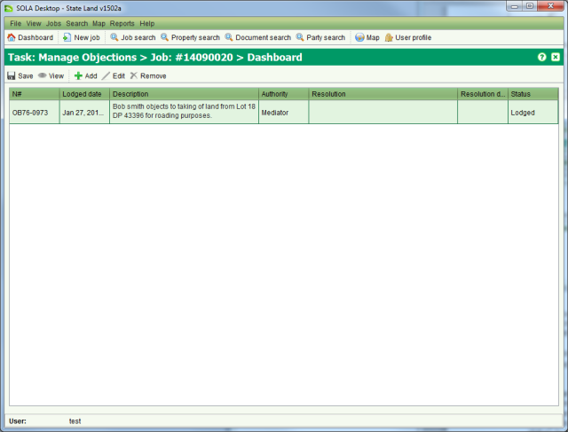
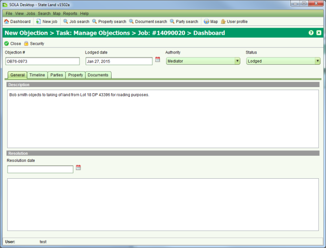

Where the actions of the state may be perceived to impact on the rights or freedoms of other
parties then those parties may choose to object to the states actions. The Objection List
screen can be used to track and manage objections related to a job. To access the Objection
List screen you must  Start a Manage Objections task from the Tasks tab of the Job Details screen.
Start a Manage Objections task from the Tasks tab of the Job Details screen.

Objection List
To add a new objection to the list click  Add on the Objection List screen. This will open the Objection Details screen
allowing you to capture information about the objection.
Add on the Objection List screen. This will open the Objection Details screen
allowing you to capture information about the objection.

Objection Details
Information you can capture about an objection includes
|
The objection reference number, the date the objection was lodged, the authority that will mediate the objection and its current status. A description can also be provided along with details of any resolution if the objection is resolved. |
|
An objection may be subject to legal proceedings so it is important that a timeline of
key events is accurately captured. You can use the Timeline tab to |
|
Use the Parties tab to identify all parties to the objection. |
|
Use the Property tab to identify all property subject to the objection. |
|
Use the Documents tab to add scanned copies of any documents related to the objection. |
When you have completed editing the objection information,  Close the Objection Details screen and
Close the Objection Details screen and  Save your changes from the Objection List screen.
Save your changes from the Objection List screen.